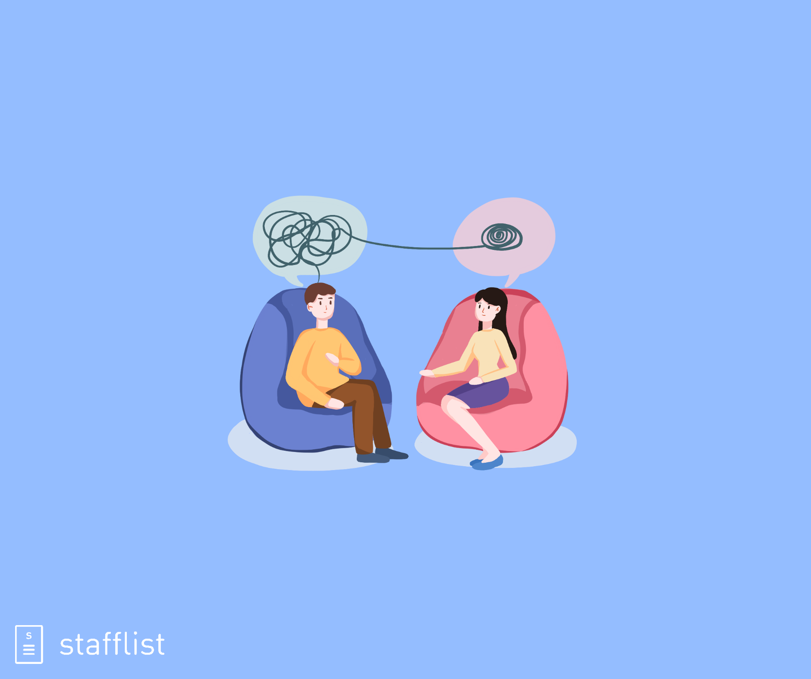

Building Better Mental Health
Melinda Smith, M.A., Robert Segal, M.A., Lawrence Robinson, and Jeanne Segal, Ph.D. || October 2020

Your mental health influences how you think, feel, and behave in daily life. It also affects your ability to cope with stress, overcome challenges, build relationships, and recover from life’s setbacks and hardships.
Strong mental health isn’t just the absence of mental health problems. Being mentally or emotionally healthy is much more than being free of depression, anxiety, or other psychological issues. Rather than the absence of mental illness, mental health refers to the presence of positive characteristics. Whether you’re looking to cope with a specific mental health problem, handle your emotions better, or simply to feel more positive and energetic, there are plenty of ways to take control of your mental health—starting today. he good news is: you don’t have to feel bad. There are practices you can adopt to elevate your mood, become more resilient, and enjoy life more."
Mental health problems don’t define who you are. They are something you experience. You walk in the rain and you feel the rain, but, importantly, YOU ARE NOT THE RAIN.
"
Anyone can suffer from mental or emotional health problems—and over a lifetime most of us will. This year alone, about one in five of us will suffer from a diagnosable mental disorder. Yet, despite how common mental health problems are, many of us make no effort to improve our situation.
We ignore the emotional messages that tell us something is wrong and try
toughing it out by distracting ourselves or self-medicating with alcohol, drugs, or
self-destructive behaviors. We bottle up our problems in the hope that others won’t notice.
We hope that our situation will eventually improve on its own. Or we simply give up—telling
ourselves this is “just the way we are.”

It requires effort to build and maintain physical health, so it is with mental health.
We have to work harder these days to ensure strong mental health,
simply because there are so many ways that life takes a toll on our emotional well-being.
No matter how much time you devote to improving your mental and emotional health, you will still need the company of others to feel and function at your best. Humans are social creatures with emotional needs for relationships and positive connections to others. We’re not meant to survive, let alone thrive, in isolation. Our social
brains crave companionship—even when experience has made us shy and distrustful of others.